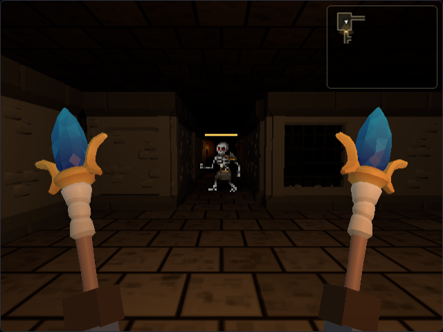

3D 화면 속도 조절과 세트 스킬 3턴마다
어제 던전 크롤러에 다크앤다커처럼 1인칭으로 보는 3D 화면을 넣었어요. 3D 화면에서는 턴을 기다리지 않고 시간이 저절로 흘러요. 오늘은 그 시간이 흐르는 속도와 몬스터가 나를 알아채는 거리를 조금 바꿨어요.
지금은 어떻게 되어 있었나
바꾸기 전에 Claude에게 지금 값이 몇인지부터 물어봤어요.
- 한 턴은 0.6초예요. 몬스터는 한 턴에 한 칸 움직이고, 붙어 있으면 한 번 때려요. 내 공격도 한 턴에 한 번이에요
- 나는 1초에 약 2.6칸 걸어요. 몬스터는 1초에 약 1.7칸이라 걸어서 도망칠 수 있어요
- 몬스터는 내 시야 안에 있으면서 가로+세로 거리가 6칸 안이면 알아채고 쫓아와요. 그 밖에서는 가끔 어슬렁거려요
0.5초로, 너무 빠르지 않게
턴을 얼마나 줄일 수 있을지 따져 봤어요.
- 0.5초: 몬스터가 1초에 2칸. 조금 더 긴장되지만 아직 걸어서 거리를 벌릴 수 있어요
- 0.4초: 몬스터가 1초에 2.5칸. 내 걸음과 거의 같아서 도망치기 어려워요
공격 횟수는 나와 몬스터가 똑같이 늘어서 싸움의 결과는 비슷해요. 대신 물약을 먹거나 거리를 벌릴 여유가 줄어서, 휴대폰에서는 꽤 바빠져요. 그래서 0.5초로 정했어요.
몬스터가 알아채는 거리는 5칸
시간이 빨라진 만큼, 몬스터가 나를 알아채는 거리는 한 칸 줄여 5칸으로 했어요. 멀리 있는 몬스터가 한꺼번에 몰려오는 일이 줄고, 내가 다가갈 때 싸움이 시작돼요. 이건 3D 화면과 예전 2D 화면 모두 같아요.

테스트로 확인했어요
몬스터는 원래 가끔 아무 쪽으로나 어슬렁거려서, 테스트할 때는 이 무작위를 고정했어요.
- 5칸 떨어진 몬스터는 한 턴 만에 한 칸 다가와요
- 6칸 떨어진 몬스터는 세 턴을 기다려도 그대로예요
- 내가 한 칸 다가가 5칸이 되면 그때 알아채고 쫓아와요
- 거리를 일부러 6칸으로 되돌려 보면 테스트가 실패하는 것까지 확인했어요
3D 화면 테스트도 0.5초에 맞게 고쳤어요. 컴퓨터가 그림을 느리게 그리는 테스트 환경에서는 턴이 조금 늦게 지나가기도 해서, 정해진 시간만 기다리지 않고 결과가 나올 때까지 기다리게 바꿨어요.
세트 스킬은 3턴마다
뇌전의 세트를 다 모아서 번개를 써 보니 너무 자주 터졌어요. 지금 값부터 다시 확인했어요.
- 뇌전의 세트 5개면 체인 라이트닝이 2턴마다 나가요. 3D 화면에서는 1초에 한 번이에요
- 한 번 쓸 때 번개가 4번 튕겨서, 적이 한 마리여도 1초에 번개 숫자가 4개씩 떠요
세 가지 안을 놓고 골랐어요.
- 3턴마다로 바꾸고 한 번 피해를 올려 전체 피해는 그대로
- 3턴마다로 바꾸고 피해는 그대로 (조금 약해짐)
- 2턴마다 그대로 두고 튕기는 횟수만 줄이기
두 번째로 정했고, 화염의 세트 파이어볼과 서리의 세트 프로스트 노바도 똑같이 3턴마다로 맞췄어요. 3D 화면에서는 1.5초에 한 번이에요. 한 번 맞을 때의 피해는 그대로라서, 세트 스킬이 시간당 주는 피해는 약 1/3 줄었어요. 스킬을 1턴 더 자주 쓰게 해 주는 룬워드 마음가짐을 끼면 2턴마다예요.
장비 설명, 영어·일본어 설명, 규칙 문서의 "2턴마다"도 모두 "3턴마다"로 고쳤어요. 테스트에서는 파이어볼을 쓴 뒤 2턴, 1턴 남았다가 세 번째 턴에 다시 나가는 것을 확인했어요.
최고 조합 페이지의 순위는 예전 2턴 기준으로 계산한 거라, 세트 스킬을 쓰는 조합이 실제보다 조금 좋게 나와요. 다음에 다시 계산할게요.
구글 애드센스 승인
드디어 구글 애드센스 승인을 받았어요. 광고 수익을 받으려면 몇 가지 설정이 더 필요해서, Claude에게 화면을 하나씩 붙여 가며 같이 진행했어요.
- 미국 세금 정보: 한국에 사는 개인이라 W-8BEN 양식을 쓰고, 한미 조세조약 혜택을 신청했어요. 웹사이트·게임 광고 수익은 "서비스 또는 사업 소득"으로 들어가요
- 신원 확인: 신분증 사진을 올리고 결과를 기다리는 중이에요
- 광고 사이트 확인 파일(ads.txt): 소개 사이트에는 이미 있었고, 게임 사이트에도 같은 파일을 올렸어요
세금이나 신원 확인처럼 개인 정보가 들어가는 칸은 구글 화면에만 입력하고, Claude에게는 화면 문구만 보여 주면서 어떤 걸 고르면 되는지 물어봤어요.
무료 선물에 진짜 광고
3시간마다 받는 무료 선물은 지금까지 5초짜리 안내 화면이 광고 자리를 대신했어요. 이제 구글의 게임용 보상형 광고가 떠요. 하루 입장, 부활, 거래 수수료를 광고로 대신할 때도 같은 광고예요.
- 광고를 끝까지 보면 선물을 받아요. 중간에 닫으면 못 받아요
- 광고가 떠 있는 동안에는 게임 시간과 소리가 멈춰요. 3D 화면에서 광고를 보다가 몬스터에게 맞는 일은 없어요
- 보여 줄 광고가 없거나 광고 차단 프로그램이 있으면, 예전처럼 5초 안내 화면으로 대신하고 선물은 그대로 받아요
테스트에서는 진짜 구글 광고를 부를 수 없어서, 구글 광고 스크립트 대신 가짜 스크립트를 넣었어요. 끝까지 본 경우, 중간에 닫은 경우, 광고가 없는 경우를 하나씩 확인했어요.
그런데 휴대폰에서는 잘 되는데 PC 브라우저에서는 광고 버튼을 누르면 멈춰 버렸어요. PC의 광고 차단 확장 프로그램은 구글 광고 스크립트를 막는 대신, 아무 일도 하지 않는 빈 스크립트로 바꿔치기하기도 해요. 그러면 게임은 오류도 받지 못하고 광고가 끝났다는 신호만 끝없이 기다렸어요.
그래서 광고를 부르고 6초 안에 광고가 뜨지 않으면 5초 안내 화면으로 대신하게 바꿨어요. 테스트에서도 아무 답도 하지 않는 가짜 스크립트를 넣어, 예전 코드는 멈추고 고친 코드는 안내 화면이 뜨는 것을 확인했어요.
게임에는 보상형 광고만, 블로그에는 자동 광고
애드센스의 광고 설정 화면을 보니 게임 페이지에 "코드 가져오기"라는 빨간 표시가 있었어요. 게임이 광고 코드를 광고 버튼을 누를 때만 불러와서, 구글이 페이지를 읽을 때는 코드가 보이지 않았던 거예요.
- 게임 페이지는 열 때부터 광고 코드를 불러오고, 보상형 광고를 미리 준비해 둬요. 버튼을 누르면 더 빨리 떠요
- 자동 광고(구글이 알아서 배너를 넣는 기능)는 게임 화면을 덮을 수 있어서 게임 페이지에서는 쓰지 않아요
- 대신 이 개발 블로그에는 자동 광고 코드를 넣었어요. 네이버로 옮기는 도우미 페이지에는 넣지 않았어요
- Poki·CrazyGames 같은 게임 포털 버전에는 구글 광고 코드가 들어가지 않는 것도 확인했어요
광고를 기다리는 동안
진짜 광고는 버튼을 누르고 동영상이 뜨기까지 몇 초가 걸리기도 해요. 그동안 화면에 아무 변화가 없으면 눌린 건지 알 수가 없어요.
- 누르자마자 "광고를 불러오는 중이에요. 잠시만 기다려 주세요." 창이 떠요
- 광고가 뜨면 이 창은 저절로 닫혀요
- 기다리기 싫으면 "취소"를 누르면 돼요. 바로 닫히고 보상은 없어요. 그 뒤에 광고가 늦게 와도 띄우지 않아요
그런데 실제 사이트에서 눌러 보니 광고 없이 기다림 창이 닫히고 안내 화면으로 넘어갔어요. 구글이 왜 광고를 주지 않았는지 알 수가 없어서, 안내 화면 아래에 그 이유를 작게 적게 했어요. "광고 스크립트를 불러오지 못했어요", "구글이 아직 보여 줄 광고가 없대요"처럼요. 이걸 보고 광고 설정을 하나씩 확인해 볼 거예요.
다음에 할 것
- 직접 해 보면서 0.5초·5칸·세트 스킬 3턴이 괜찮은지 보기
- 최고 조합 페이지를 세트 스킬 3턴으로 다시 계산하기
- 진짜 광고가 잘 뜨는지 실제 사이트에서 확인하기
- 3D 화면 다듬기: 몬스터를 3D 모델로
- 안드로이드 앱으로 만들어서 구글 플레이에 올리기